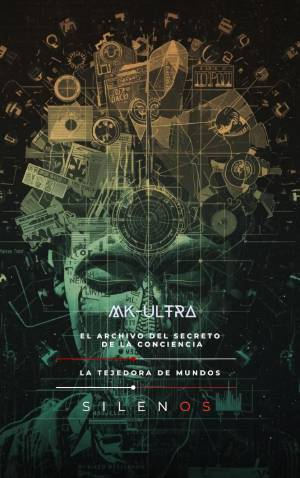

Illuminati
MK ULTRA : El archivo del secreto y la conciencia
Sinopsis
¿Es posible borrar la identidad de un ser humano y reconstruirla a voluntad? ¿Hasta dónde llegó la ciencia en su intento por dominar la mente durante los años más oscuros de la Guerra Fría? Este libro se adentra en las profundidades de MK-ULTRA, el programa de control mental más ambicioso y polémico de la historia de la inteligencia estadounidense. A través de una narrativa rigurosa y absorbente, la obra desclasifica décadas de experimentos que cruzaron todas las fronteras éticas, desde laboratorios suizos hasta psiquiátricos en Montreal. Lo que descubrirás en sus páginas: El Origen Molecular: El nacimiento del LSD-25 y cómo una sustancia descubierta por accidente se convirtió en una herramienta estratégica de seguridad nacional. El Laberinto de Montreal: Los brutales métodos del Dr. Donald Ewen Cameron, quien buscaba "des-patronizar" la mente humana mediante electroshocks, comas inducidos y privación sensorial. Operaciones en la Sombra: Desde la "Operación Clímax de Medianoche" hasta el uso de simbología oculta y programación traumática. La Nueva Frontera: Un análisis necesario sobre cómo el legado de aquellos experimentos pervive hoy en la neurociencia moderna, los algoritmos de control social y las interfaces cerebro-computadora. Por qué leer este libro: A diferencia de otras crónicas, este volumen conecta el pasado de los expedientes quemados con el presente de la tecnología digital. Es una investigación esencial para quienes buscan comprender la tensión entre el avance científico, la seguridad del Estado y la inviolabilidad de la conciencia humana. Sumérgete en el archivo del secreto y descubre la verdad que intentaron borrar.